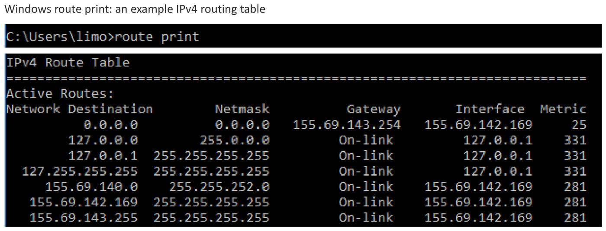
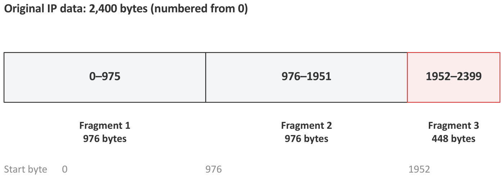
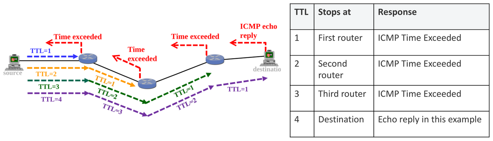

6. Network Layer: Forwarding, ARP, Fragmentation & ICMP
This chapter covers the second half of Part II Lecture 2. It answers four questions:
- When a host or router has a packet, where does it send it next? (Forwarding, longest-prefix match.)
- How does it find the MAC address of that next device? (ARP.)
- What happens when a packet is too big for the next link? (Fragmentation.)
- How do we test the path? (ICMP, ping, traceroute.)
High-yield exam tasks:
- List the frames seen at a station during a ping, with their MAC addresses and purposes.
- Pick the route with longest-prefix match.
- Build a fragmentation table (length, offset, MF flag, ID).
- Rebuild a topology from traceroute outputs.
1. Forwarding
1.1 Terms
- Forwarding: the decision to send a packet out of a particular interface towards its destination. It is one lookup in a table for each packet.
- Routing: the process that fills in that table (Chapter 7).
- Next hop: the device that should get the packet next. It is either the destination itself (when the destination is on the same subnet) or a router.
- Routing table: a list of entries. Each entry maps a destination prefix to an outgoing interface and, if needed, a next-hop router.
- Default route: 0.0.0.0/0. It matches every destination.
- Default gateway: the next-hop router for a host’s default route. The host uses it when no more specific route matches.
1.2 How a host decides: local or remote
- AND the destination address with its own mask.
- Compare the result with its own network address.
- Same: the destination is local (on-link). Send the frame directly to the destination.
- Different: the destination is remote. Send the frame to the default gateway.
In both cases, the IP destination stays the final host. Only the next hop changes.

Host A (192.168.10.10/24, gateway 192.168.10.1) has this table:
| Destination prefix | Next hop | Interface |
|---|---|---|
| 192.168.10.0/24 | the destination itself | A’s Ethernet |
| 0.0.0.0/0 | 192.168.10.1 | A’s Ethernet |
- To B (192.168.10.20): it is local, so A sends directly.
- To C (192.168.20.20): it is remote, so A sends to the gateway.
1.3 Why the mask matters
The same two addresses can be local or remote. It depends only on the mask. A = 172.16.10.5 and the destination is 172.16.200.9.
| Host mask | A’s network | Destination’s network | Decision |
|---|---|---|---|
| /16 | 172.16.0.0 | 172.16.0.0 | Local: ARP for the destination itself |
| /24 | 172.16.10.0 | 172.16.200.0 | Remote: send to the gateway |
A wrong mask breaks things. In the lecture, a laptop with .10/24 instead of .10/26 thinks server .70 is local. It sends an ARP request for .70. That broadcast stays on its own LAN, so nobody answers, and the traffic fails. With the correct /26, the laptop ARPs for gateway .1 instead.
1.4 Longest-prefix match
Several entries can match one destination. The router chooses the match with the longest prefix, because it describes the most specific block. The default route /0 is the least specific, so it is the last choice.
Method:
- For each entry, check whether the destination is inside that block. (AND the destination with the entry’s mask and compare.)
- Among the matches, choose the one with the largest .
Lecture example: the destination is 10.20.18.7. The entries 0.0.0.0/0, 10.0.0.0/8, 10.20.0.0/16 and 10.20.18.0/24 all match. Choose /24.
A table with overlapping entries.
| Network | Mask | Prefix | Covers | Interface |
|---|---|---|---|---|
| 0.0.0.0 | 0.0.0.0 | /0 | everything | Idx0 |
| 150.20.32.0 | 255.255.240.0 | /20 | 150.20.32.0 – 150.20.47.255 | Idx1 |
| 160.5.128.0 | 255.255.192.0 | /18 | 160.5.128.0 – 160.5.191.255 | Idx2 |
| 150.20.40.0 | 255.255.252.0 | /22 | 150.20.40.0 – 150.20.43.255 | Idx3 |
| Destination | Matches | Chosen |
|---|---|---|
| 150.20.42.7 | /0, /20, /22 | Idx3 (the /22 is the longest) |
| 160.5.190.1 | /0, /18 | Idx2 |
| 150.20.47.16 | /0, /20 (47 is outside 40–43) | Idx1 |
| 9.9.9.9 | /0 only | Idx0 (the default route) |
The /22 sits inside the /20. Longest-prefix match lets a router send most of a block one way and a small part of it another way.
1.5 Reading a real routing table
On Windows, route print shows the table. “0.0.0.0 with
mask 0.0.0.0” is the default route. “On-link” means the destination is
directly reachable (no gateway). First match the destination and the
mask. Then read the gateway and the interface.

2. ARP: From an IP Address to a MAC Address
2.1 Why we need ARP
Forwarding gives the IP address of the next hop. But an Ethernet frame needs the next hop’s MAC address. ARP (Address Resolution Protocol) finds the MAC address for an IPv4 address on the local link.
2.2 How ARP works
- The host looks in its ARP cache (a table of IP → MAC pairs it has learnt).
- If the pair is missing, it sends an ARP request as
an Ethernet broadcast (destination MAC
FF:FF:FF:FF:FF:FF): “Who has 192.168.10.20? Tell 192.168.10.10.” - The device that owns that IP sends an ARP reply as a unicast: “192.168.10.20 is at MAC B.”
- The host saves the pair in its cache. The other device also learns the sender’s pair from the request.
| Field | ARP request | ARP reply |
|---|---|---|
| Ethernet source | A | B |
| Ethernet destination | FF:FF:FF:FF:FF:FF (broadcast) | A |
| Sender IP | 192.168.10.10 | 192.168.10.20 |
| Target IP | 192.168.10.20 | 192.168.10.10 |
- ARP stays on the local link. Routers do not forward ARP broadcasts.
- An ARP request is an Ethernet broadcast, not an IP broadcast.
- Which IP does ARP ask for? The next-hop IP. For a remote destination, that is the gateway’s IP, not the final destination’s IP.
Remote server example: A is 192.168.10.10/24 with gateway .1, and the server is 203.0.113.80. ARP target = 192.168.10.1. Ethernet destination = the gateway’s MAC. IP destination = 203.0.113.80.

2.3 Three tables, three devices
| Table | Maps | Used by |
|---|---|---|
| ARP cache | next-hop IPv4 → MAC | a host or router that builds a frame |
| Switch forwarding table | MAC → switch port | a switch that forwards a frame |
| Routing table | destination prefix → next hop / interface | a host or router that forwards an IP packet |
The route lookup chooses the next hop. ARP finds its MAC. The switch chooses the output port.
2.4 How an Ethernet switch learns
- When a frame arrives, the switch learns its source MAC and the port it came in on.
- For a known unicast destination, it forwards the frame only out of the learnt port. If that port is the incoming port, it does not forward the frame at all.
- For a broadcast or an unknown unicast, it floods the frame out of every port except the incoming one.
The switch learns from source MACs and forwards on destination MACs. Don’t mix the two up.
3. Frame Sequences During a Ping
ping sends an ICMP Echo Request inside
an IP packet, inside a frame. The destination sends back an ICMP
Echo Reply. Every IP packet still needs a route and a frame, so
ARP runs first if the cache is empty.
To list the frames, ask three questions in order:
- Is the destination local or remote? (AND it with the sender’s own mask.)
- So which IP address must ARP resolve: the destination’s or the gateway’s?
- Which LAN is each frame on? A station sees only the frames on its own LAN.
3.1 Ping to a local host through a switch
A and B are on the same subnet. A is on switch port 1 and B is on port 2. All ARP caches and the switch table start empty. A pings B.
| # | Source MAC | Destination MAC | Purpose | Switch action |
|---|---|---|---|---|
| 1 | A | FF:FF:FF:FF:FF:FF | ARP request: who has B’s IP? | Learns A on port 1. Floods to every other port. |
| 2 | B | A | ARP reply: B’s IP is at MAC B | Learns B on port 2. Forwards to port 1 only. |
| 3 | A | B | Echo request | Knows B: forwards to port 2 only. |
| 4 | B | A | Echo reply | Knows A: forwards to port 1 only. |
B also learns A’s IP → MAC pair from the ARP request in frame 1. So B needs no ARP of its own before it replies.
If A sits on a hub that hangs off the switch port, the hub repeats every frame to all stations on that hub. Those stations see the frames but ignore the ones that are not for them.
3.2 Ping to a remote host through a router
Take the two LANs from Section 1.2. A (192.168.10.10/24) pings C (192.168.20.20/24). C is remote, so A’s frames go to its gateway, the router’s left interface (R-left, 192.168.10.1). The router’s right interface is R-right (192.168.20.1). All caches start empty.
| Event | LAN | Purpose | Ethernet source / destination |
|---|---|---|---|
| 1 | Left | ARP request for the gateway (192.168.10.1) | A / broadcast |
| 2 | Left | Gateway’s ARP reply | R-left / A |
| 3 | Left | Echo request for C | A / R-left |
| 4 | Right | ARP request for C | R-right / broadcast |
| 5 | Right | C’s ARP reply | C / R-right |
| 6 | Right | Echo request reaches C | R-right / C |
| 7 | Right | Echo reply from C | C / R-right |
| 8 | Left | Echo reply reaches A | R-left / A |
A sees only events 1, 2, 3 and 8. Each ARP exchange stays on its own LAN. The router learnt A’s MAC from A’s ARP request in event 1, so it needs no ARP on the left before event 8.
What the router does to the packet in event 3:
- It removes the old frame.
- It looks up 192.168.20.20 in its routing table. The match is 192.168.20.0/24, directly connected on the right.
- It decreases the TTL by 1 and recalculates the header checksum.
- It ARPs for C on the right LAN if needed (events 4 and 5).
- It puts the packet in a new frame from R-right to C.
| Field | Arriving at the router | Leaving towards C |
|---|---|---|
| Ethernet source | A | R-right |
| Ethernet destination | R-left | C |
| IP source | 192.168.10.10 | 192.168.10.10 (same) |
| IP destination | 192.168.20.20 | 192.168.20.20 (same) |
| TTL | for example 64 | 63 |
| Header checksum | valid for the incoming header | recalculated |
Without NAT, the IP addresses stay the same end to end. The MAC addresses change on every hop.
4. IPv4 Fragmentation
4.1 MTU
The MTU (Maximum Transmission Unit) is the largest IP packet that a link can carry. It counts the IP header + IP data. It does not count the Ethernet header and trailer. Different links can have different MTUs. When a packet is bigger than the next link’s MTU, an IPv4 router can split it into fragments.
4.2 The header fields
| Field | Meaning |
|---|---|
| Total Length | The size of this packet or fragment in bytes: header + data. |
| IHL (Internet Header Length) | The header length in 32-bit words. IHL = 5 means bytes. |
| Identification (ID) | The same value in every fragment of one datagram. It groups them together. |
| Fragment Offset | Where this fragment’s data starts in the original data, in units of 8 bytes. |
| DF (Don’t Fragment) | DF = 1: the router must not fragment. If the packet is too big, the router drops it and normally sends ICMP “fragmentation needed”. |
| MF (More Fragments) | MF = 1: more fragments follow. The last fragment has MF = 0. |
- Every fragment gets its own IP header.
- Only the final destination puts the fragments back together (reassembly). Routers in between do not. The destination groups fragments by ID, source, destination and protocol.
- Offsets put the data back in place even if fragments arrive out of order.
4.3 Method
- Data size: original data = Total Length − header (usually 20 bytes). Read carefully whether the question gives the total length or the data length.
- Space per fragment: MTU − 20.
- Round down to a multiple of 8: max data per fragment . Every fragment except the last must carry a multiple of 8 data bytes, because offsets count in 8-byte units.
- Number of fragments: . The last fragment carries what is left.
- For each fragment: Total Length = data + 20. Offset = (start byte) / 8. MF = 1 except for the last. ID = the original ID.
- Check: the data adds up to the original; every Total Length MTU; only the last has MF = 0.
4.4 Worked example (lecture)
Total Length 2420 bytes, 20-byte header, MTU 1000, DF = 0, ID = 77.
- Data bytes.
- Space , so max data bytes.

| Fragment | Data bytes | Total Length | Offset | MF | ID |
|---|---|---|---|---|---|
| 1 | 976 | 996 | 0 | 1 | 77 |
| 2 | 976 | 996 | 976/8 = 122 | 1 | 77 |
| 3 | 448 | 468 | 1952/8 = 244 | 0 | 77 |
4.5 More examples
When MTU − 20 is already a multiple of 8. Total Length 4000 bytes, 20-byte header, MTU 1500, ID 9.
- Data bytes.
- Space , so no rounding is needed.
- fragments: 1480, 1480 and bytes.
| Fragment | Data | Total Length | Offset | MF | ID |
|---|---|---|---|---|---|
| 1 | 1480 | 1500 | 0 | 1 | 9 |
| 2 | 1480 | 1500 | 1480/8 = 185 | 1 | 9 |
| 3 | 1020 | 1040 | 2960/8 = 370 | 0 | 9 |
Lecture’s second example. Total Length 2020, MTU 620, ID 88. Data . Space , already a multiple of 8. Four fragments carry 600, 600, 600 and 200 bytes, at offsets 0, 75, 150 and 225.
A quick check on offsets. Each offset equals the previous offset plus the previous fragment’s data divided by 8. With equal full fragments, the offsets go up in equal steps.
4.6 What if one fragment is lost?
The destination needs every fragment. If one is missing when the reassembly timer runs out, it discards the whole datagram. IP does not ask for the missing piece. TCP or the application must recover the data.
So the probability that the whole packet arrives is:
for fragments, each lost with probability .
- 5 fragments, each lost with : . More than one packet in five is lost, although each fragment is lost only one time in twenty.
- If the sender sends each fragment twice, a fragment is lost only if both copies are lost: . Then .
4.7 Packet size is a trade-off
- Large packets: fewer headers and fewer packets to process. But one loss destroys more data.
- Small packets: less data lost per loss, and a shorter time to send each packet. But more header overhead. (Lecture: 5600 bytes as 4 × 1400 carries 80 header bytes; as 8 × 700 it carries 160.)
Fragmentation is not a way to make delivery more reliable.
4.8 DF and Path MTU Discovery
- DF = 0: the router may fragment. The destination must reassemble.
- DF = 1: the router drops the oversized packet and normally reports ICMP “fragmentation needed”.
- Path MTU Discovery uses that ICMP feedback, so the sender learns to send packets that fit. If the feedback is blocked, small pings work but large transfers fail.
- A tunnel adds headers (for example 100 bytes). A 1500-byte inner packet becomes 1600 bytes and does not fit an MTU of 1500. The fix is to send 1400-byte inner packets.
5. ICMP, Ping and Traceroute
5.1 ICMP
ICMP (Internet Control Message Protocol) carries control and error messages inside IP packets. It reports problems. It does not repair them.
| Message | Meaning | Example |
|---|---|---|
| Echo Request / Echo Reply | Testing reachability | ping |
| Destination Unreachable | The packet could not be delivered | No route; or fragmentation needed with DF = 1 |
| Time Exceeded | TTL reached 0 at a router | traceroute uses this |
5.2 What ping tells you
- A reply proves that ICMP worked for that probe. It does not prove that the application (for example the website) works.
- A timeout only says that no reply came in time. It does not tell you the cause. Possible causes: a wrong gateway, a missing route on a router, a firewall rule, a wrong address or gateway on the server, or a server that is set not to answer pings.
- DNS is not needed when you ping a numeric address.
- In the output,
time= the round-trip time, andTTL= the TTL left in the reply.
5.3 TTL
TTL (Time To Live) is an IPv4 header field that limits how many routers a packet can pass. Each router decreases TTL by 1. When TTL reaches 0, the router discards the packet and normally sends ICMP Time Exceeded back to the source. This stops a packet from going round a routing loop for ever.

5.4 How traceroute works
traceroute (tracert on Windows) sends
probes with TTL = 1, then 2, then 3, and so on.
- The TTL = 1 probe dies at the 1st router, which replies with Time Exceeded. Now we know router 1.
- The TTL = 2 probe dies at the 2nd router. Now we know router 2.
- This continues until a probe reaches the destination, which sends an Echo Reply.

Reading the output: each row is one hop. The three times are the round-trip times of three probes. Then comes the address of the router interface that replied.
- A
*means that no reply arrived before the timeout. The router may still forward traffic normally. (Many routers do not answer probes.) - Traceroute combines the replies to different probes. It is not one packet that reports its whole journey. Different probes can take different paths.
5.5 Why the reverse trace shows different addresses
A router has several interfaces, each with its own IP address. In these questions, assume a router replies with the interface towards the source. So the same router shows a different address in the trace from A to B and in the trace from B to A.

| Direction | Hops shown |
|---|---|
| A → B | 192.0.2.1 (R1) → 198.51.100.2 (R2) → 203.0.113.10 (B) |
| B → A | 203.0.113.1 (R2) → 198.51.100.1 (R1) → 192.0.2.10 (A) |
6. Rebuilding a Topology from Traceroutes
6.1 Method
- For each trace, write the source, every hop in order, and the destination.
- The last line of a trace is the destination host. The first line is the source’s gateway (the interface on the source’s LAN).
- Group addresses by network (use the given masks). Two addresses on the same network are the two ends of one link, or two interfaces on one LAN.
- Find addresses that belong to the same router. Remember that a router replies with its interface towards the source, so the same router shows a different address in each direction.
- Draw one diagram that explains every trace. If masks are missing, state your assumption. Traces alone may not give one unique answer.
If a question gives no masks and tells you to assume classful boundaries, use the first octet: 1–126 gives /8, 128–191 gives /16, and 192–223 gives /24 (Chapter 5, Section 3.5). In modern classless addressing, always use the given prefix or mask instead.
6.2 Example
Three hosts X, Y and Z run traceroute to each other. Every network is a /24.
| From X to Y | From Y to Z | From Z to X |
|---|---|---|
| 192.168.1.1 | 192.168.2.1 | 192.168.3.1 |
| 10.0.12.2 | 10.0.23.2 | 10.0.24.2 |
| 10.0.23.3 | 10.0.24.4 | 10.0.12.1 |
| 192.168.2.20 | 192.168.3.30 | 192.168.1.10 |
Step 1: hosts and gateways. The last lines give the hosts: Y = 192.168.2.20, Z = 192.168.3.30, X = 192.168.1.10. The first lines give the gateways. Call them R1 (192.168.1.1, on X’s LAN), R3 (192.168.2.1, on Y’s LAN) and R4 (192.168.3.1, on Z’s LAN).
Step 2: the last router before each host. The hop just before the host is that host’s gateway, seen from the other side.
- In X → Y, the hop before Y is 10.0.23.3. So R3 also owns 10.0.23.3, its link interface.
- In Y → Z, the hop before Z is 10.0.24.4. So R4 also owns 10.0.24.4.
- In Z → X, the hop before X is 10.0.12.1. So R1 also owns 10.0.12.1.
Step 3: the router in the middle. Each trace has one hop left: 10.0.12.2, 10.0.23.2 and 10.0.24.2.
- 10.0.12.2 is on the same /24 as R1’s 10.0.12.1. So it is the far end of R1’s link.
- 10.0.23.2 is on the same /24 as R3’s 10.0.23.3. So it is the far end of R3’s link.
- 10.0.24.2 is on the same /24 as R4’s 10.0.24.4. So it is the far end of R4’s link.
Each of these addresses is the middle hop between two gateways. In X → Y, the packet goes R1 → ? → R3, and the middle router replies with 10.0.12.2, its interface towards R1. In Y → Z, it goes R3 → ? → R4, and the reply is 10.0.23.2, towards R3. In Z → X, it goes R4 → ? → R1, and the reply is 10.0.24.2, towards R4. One router, R2, with all three interfaces, explains all three traces.
LAN X 192.168.1.0/24 — R1 —(10.0.12.0/24)— R2 —(10.0.23.0/24)— R3 — LAN Y 192.168.2.0/24
|
(10.0.24.0/24)
|
R4 — LAN Z 192.168.3.0/24Step 4: check. X → Y goes R1, R2, R3. Y → Z goes R3, R2, R4. Z → X goes R4, R2, R1. Each reply address is that router’s interface on the network that the packet came in from.
6.3 Smallest address block from traces
To find the smallest CIDR block that holds an organisation’s addresses, collect every address seen inside it and take their longest common prefix (Chapter 5, Section 4.6).
| Organisation | Addresses seen | Changing octet in binary | Block |
|---|---|---|---|
| P | 150.40.66.9, 150.40.70.3, 150.40.79.200 | 66 = 0100 0010, 70 = 0100 0110, 79 = 0100 1111 → 4 shared bits | 150.40.64.0/20 |
| Q | 120.8.130.5, 120.8.131.77 | 130 = 1000 0010, 131 = 1000 0011 → 7 shared bits | 120.8.130.0/23 |
7. Common Traps
- Host decision: AND the destination with its own mask. Local → ARP the destination. Remote → ARP the gateway.
- For a remote destination, the Ethernet destination is the gateway’s MAC, but the IP destination is still the final host.
- IP addresses stay the same end to end (no NAT). MAC addresses change on every hop. TTL decreases by 1 at each router, and the checksum is recalculated.
- ARP request = Ethernet broadcast. ARP reply = unicast. Routers never forward ARP.
- A switch learns from the source MAC, forwards on the destination MAC, and floods broadcasts and unknown destinations.
- A station sees only the frames on its own LAN.
- Longest-prefix match: check that the entry matches first, then take the largest /n. The default route /0 is the last choice.
- MTU counts the IP header and data, not the Ethernet header.
- Fragments: data per fragment is a multiple of 8 (except the last). Offset = start byte / 8. Last MF = 0. Same ID in all. Reassembly happens only at the destination.
- Read whether a size is the Total Length or the data length before you subtract the header.
- . One lost fragment loses the whole datagram.
- A ping reply proves ICMP works, not that the application works. A timeout does not tell you the cause.
- Traceroute: a router replies with the interface towards the source.
*does not mean the router is broken.